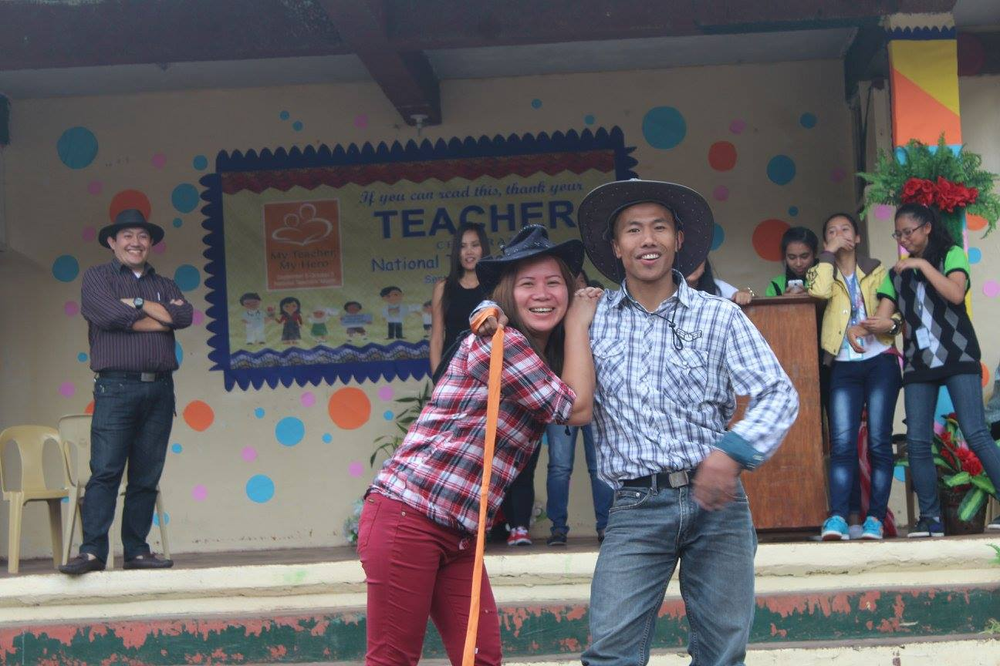
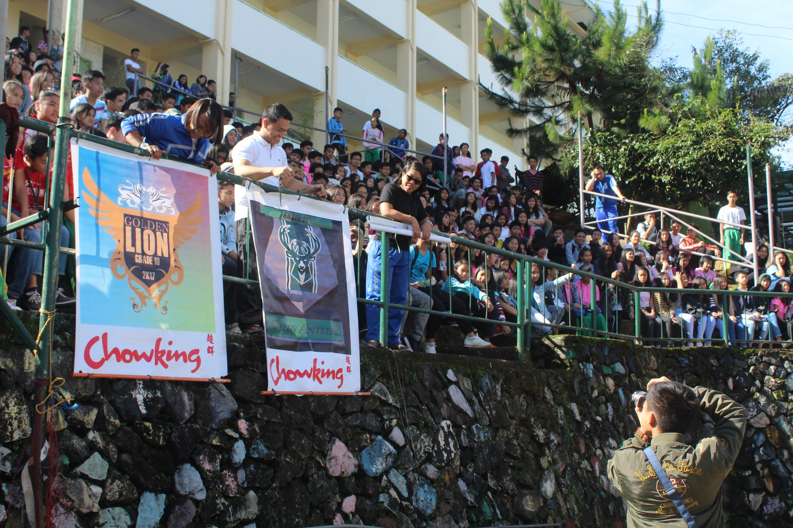
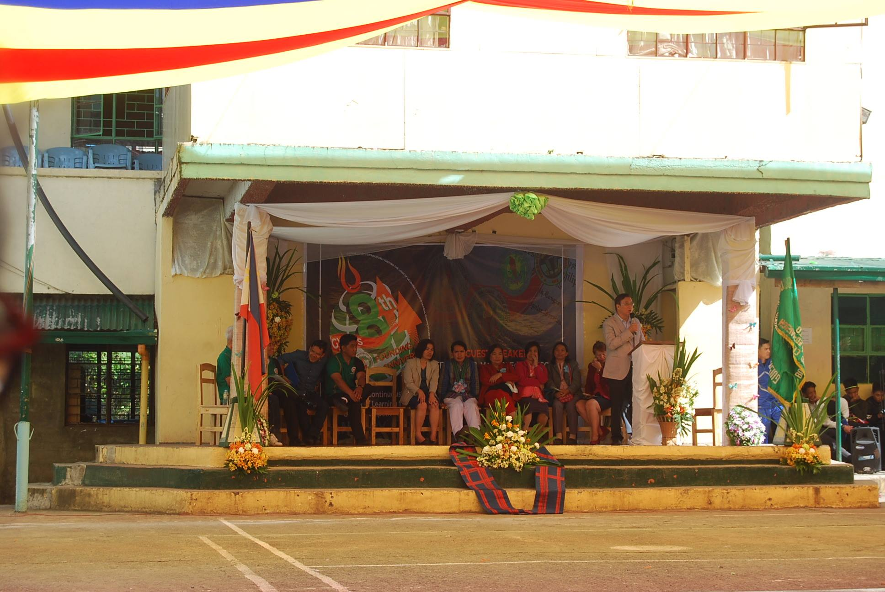
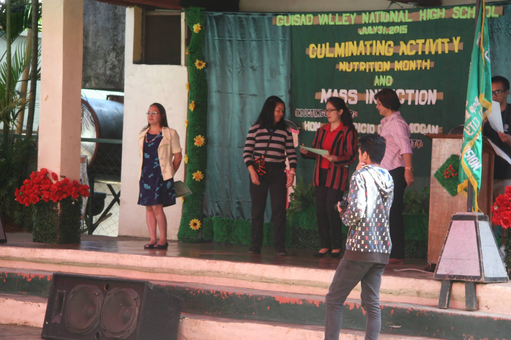
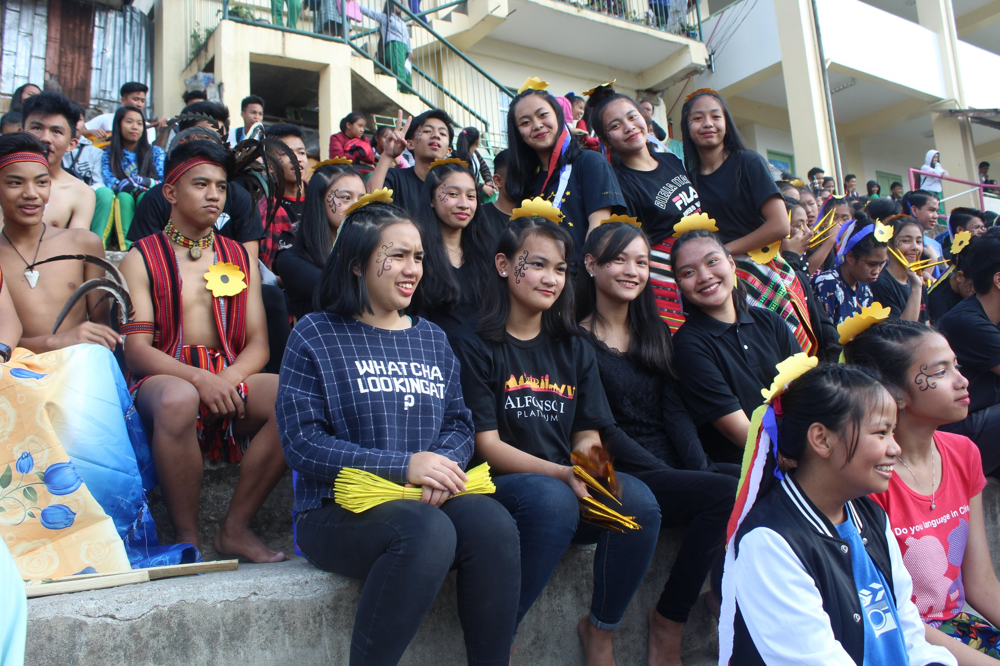

EVENTS in GVNHS

World Teacher’s Day is held annually on 5 October to commemorate the anniversary of the signing of the 1966 UNESCO/ILO Recommendation concerning the Status of Teachers. It is an opportunity to acknowledge teachers and say thanks for the significant contributions they make in classrooms and communities. The activities are Teacher’s Day Games wherein students will be the one to decide on what games the teachers will perform, Stage Performances, and many more.
World Teacher’s Day

The Intramural in Guisad Valley National High School is fun wherein every grade level from 7-12 are included and there are games that will be enjoyed by the students as well as the teachers. These intramural provide great opportunities for students to be creative and to become directly involved in developing activities that they want to enjoy. The games that is included:
Sports: volleyball, basketball, etc.
Larong Lahi: speak takraw, futsal, etc.
Mind games: chess,scrabble
Mr. and Ms.Intramurals, Yell Competition, Banner Competition
School Intramural

Foundation day is celebrated during January it is where Guisad Valley had finally achieved its independence from her mother school, Pines City National High School. The activities are showcasing the talents of the teachers/students, competition of art museum, etc.
GVNHS Foundation Day

Nutrition Month aims to promote healthy diets to contribute to the reduction of overweight, obesity and non-communicable diseases. It also teaches the public on how to better discern between healthy and unhealthy foods for better food choices. There are some activities in celebrating Nutrition Month in Guisad Valley National High School such as poster making, slogan, and cooking showdown. The main activity is cooking, students are the one who will cook and the ingredients they should use are healthy.
Nutrition Month

National Indigenous People’s Day is celebrated during August 9 and this is to promote the rights of indigenous people groups in the country. The activities that Guisad perform for this occasion are dancing according to the tribes in the Philippines, tattoo making, painting, poster making, and slogan making.
National Indigenous People’s Day
support@edukasyon.ph
@ 2021 All rights Reserved Edukasyon.ph
Sources:
*All pictures are taken from Sir Marlon* https://www.facebook.com/Princenolram